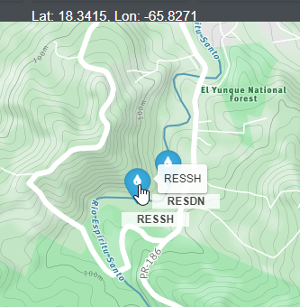
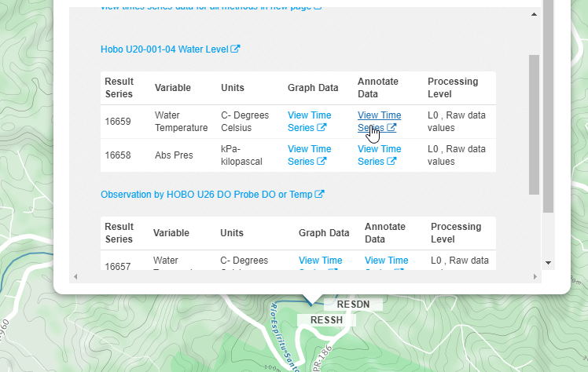
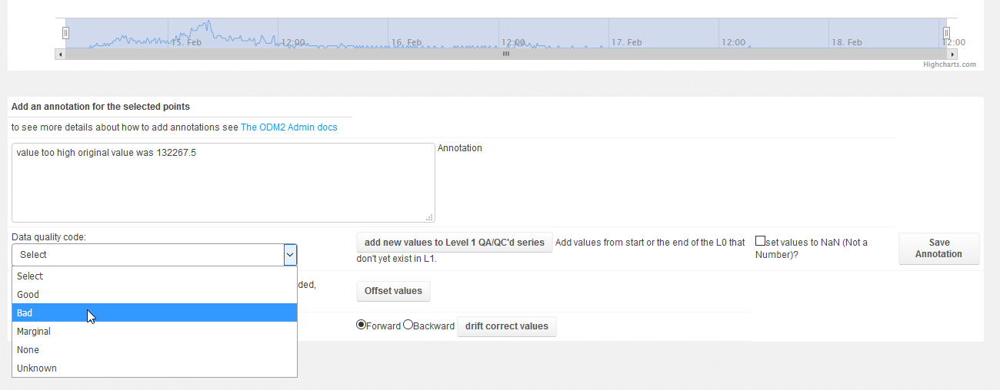
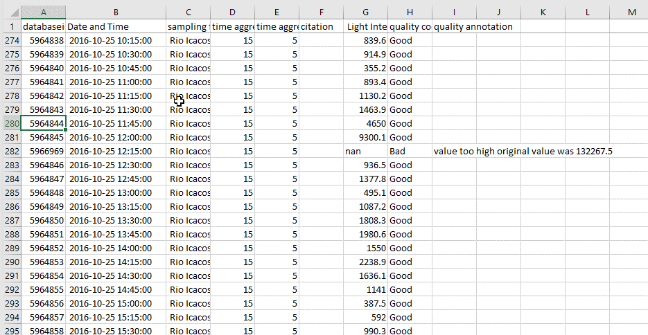
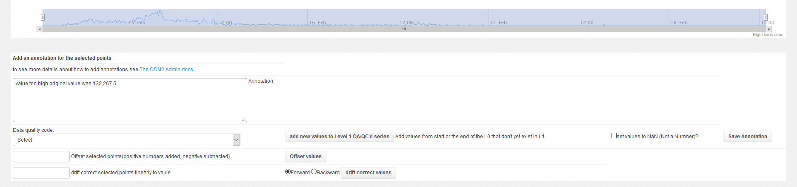

Time Series Data QA/QC¶
ODM2 Admin can be used as a tool for time series data quality assurance and control. Raw time series can be copied and then modified with time series result annotations. Portions of time series can be selected and if values are known to be bad they can be set to not a number ‘NaN’ while the original values are maintained in an annotation. The annotation can then also indicate the reason why the value was not good, such as the instrument was out of calibration.
Let’s try it out, we are going to visit the data annotation page for a measurement of water temperature at the Rio Espiritu Santo Stream House (RESSH), from the map this is a sampling feature of type ‘Stream Gage’ labeled RESSH.

From Here follow the link to the water temperture read by either the pressure transducer or the DO probe, select the ‘Annotate Data’ link as shown here:

http://odm2admin.cuahsi.org/Sandbox/graphfa/samplingfeature=776/resultidu=16657/popup=Anno/
You can select some of the points by dragging a selection box around them, it should look like this:

With the points selected we can select a new data quality code, enter an annotation, generate a L1, QA/QC level from a level 0 time series. From a time series that are not raw data (something other then L0) we can set values to Not A Number (NAN).

Our Annotated data will then look something like this:

You can also add or subtract an offset value to a set of points or drift correct them. Drift correcting points will apply a linear correction so that the first or last point (depending if you select forward or backward) will have the value entered. The remaining values you selected will have an offset added to them. This offset is proportional to the points position in the set of points selected.
